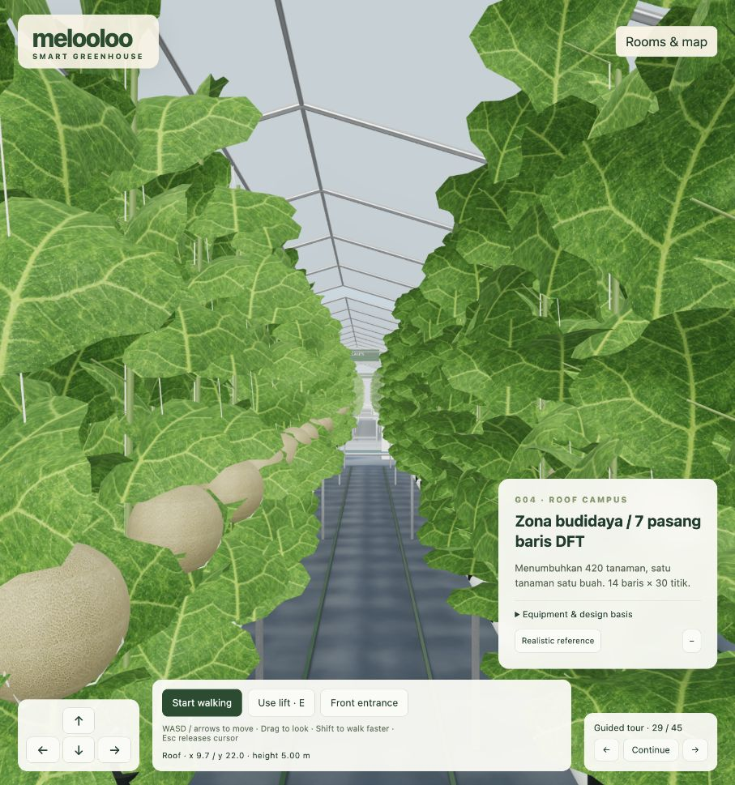
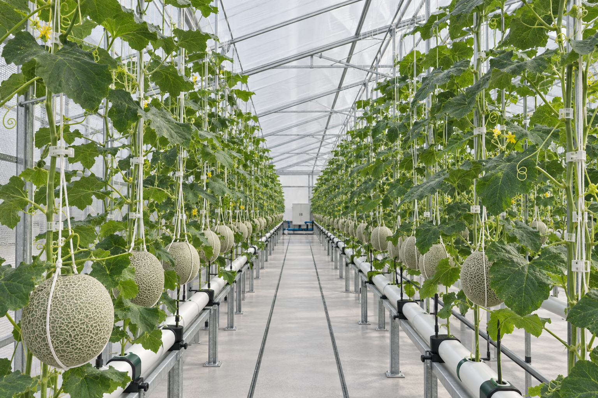
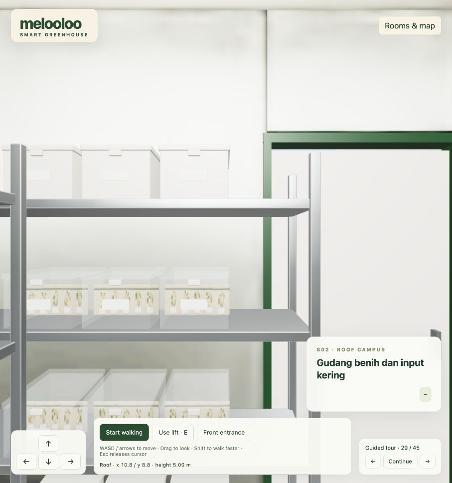
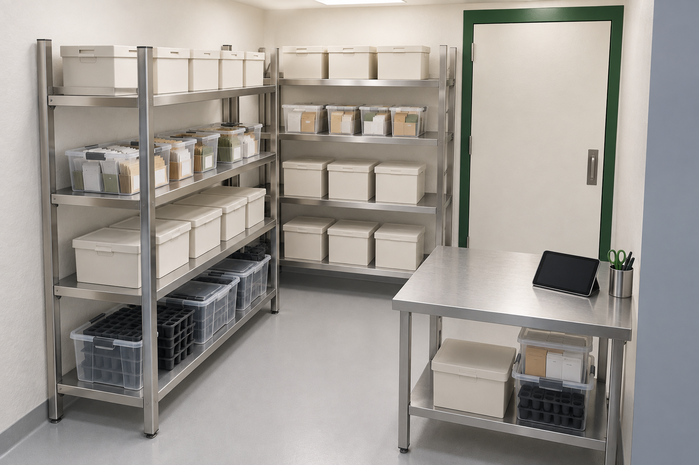
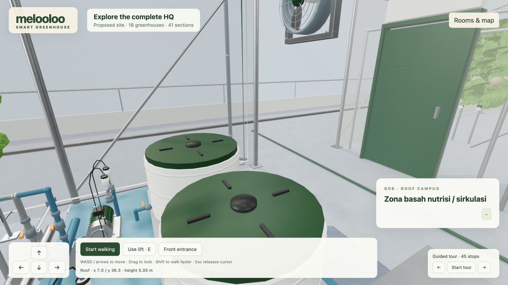
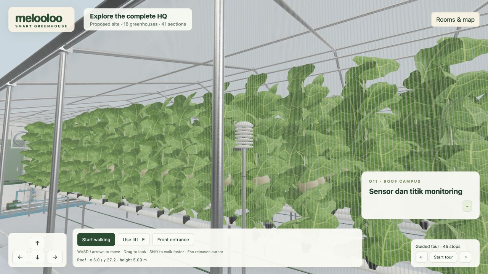
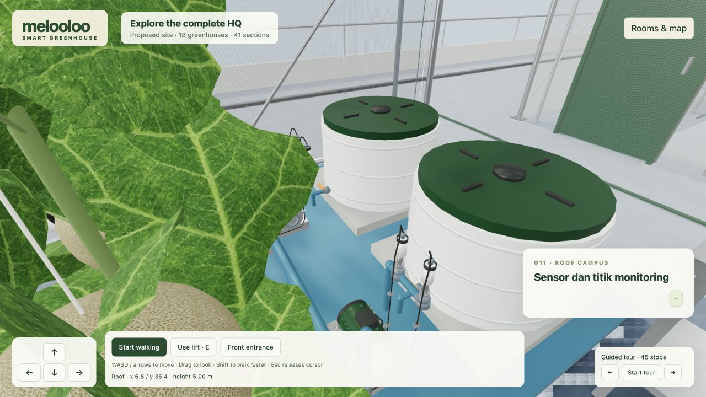
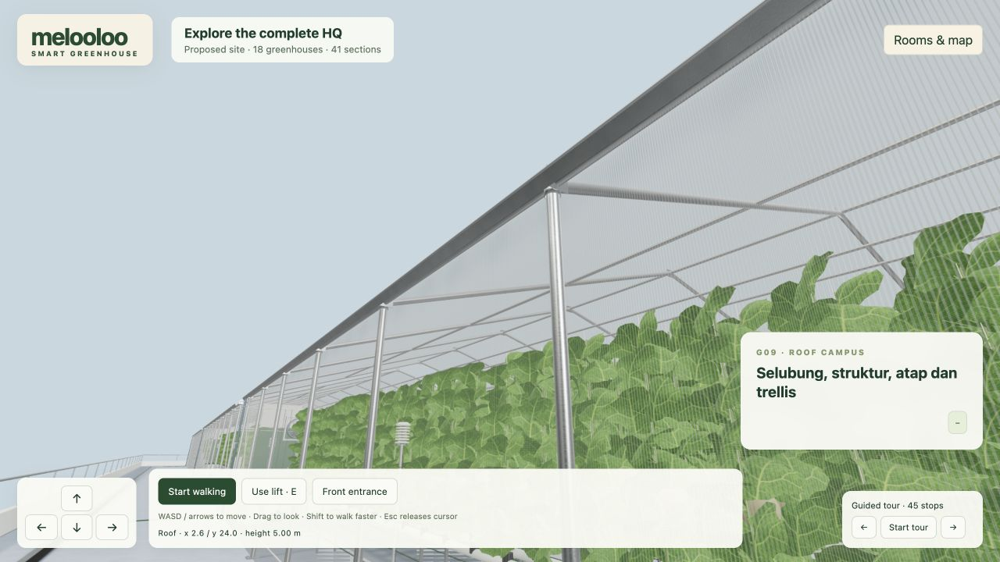
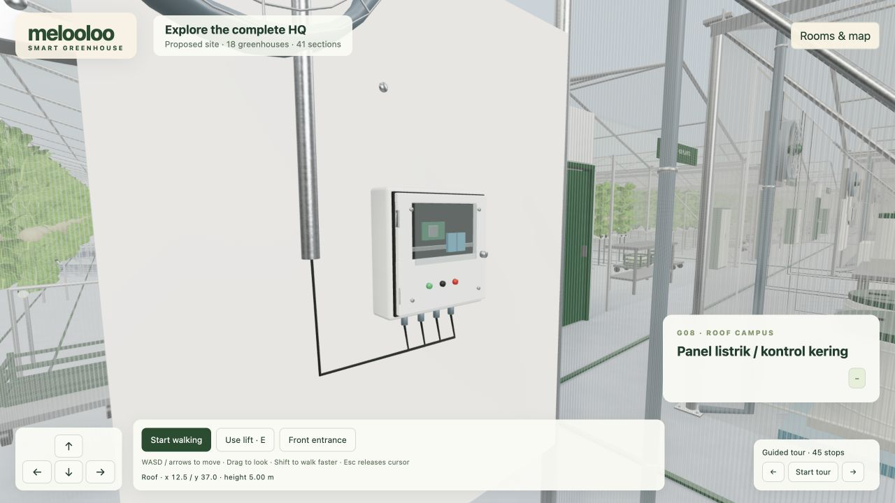
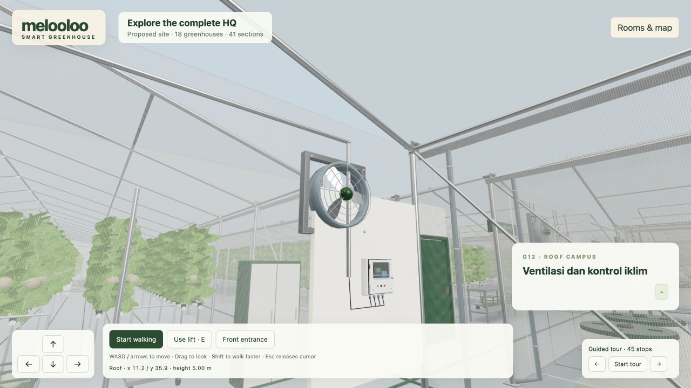

melooloo / realism upgrade · 29 September 2026Photographic surfaces in a freely walkable greenhouse.
Higgsfield generated leaf, melon-rind and seed-envelope surface images. Blender supplies curved foliage, tendrils, fruit cradles and detailed dry-storage fixtures. The existing Cycles daylight maps remain integrated.
G04 · crop aisle

Actual browser capture of the pilot.
Photographic design target from the section atlas.The shared module retains 420 planting positions, with 18 curved leaves per plant. It is reused across all 18 HQ greenhouses. Leaf veins and netted rind are photographic textures, with CPU-baked illustrative surface relief.
S02 · dry seed and input storage

Actual browser capture of the pilot.
Photographic design target from the section atlas.S02 now has rounded rack fixtures, 24 bins, lids, latches, blank lot-label areas and 60 seed-envelope props. The existing equipment footprints and walking routes are preserved.
Infrastructure and sensors · G06–G12
The enhanced standard module includes detailed steel connections, film tension, woven insect mesh, tank ribs, pump fins, pipe unions, valve handles, an inspection-window control cabinet and fans with swept blades and wire safety grilles. Signal cables have service slack and supported conduit routes.

G06 · Tanks, pumps, valves and supported cable routes.
G11 · Shielded air monitoring. Select Air sensors in the walkthrough.
G11 · Solution probes. Actual interactive walkthrough.
G09 · Structure, roof, woven barrier and shielded air monitoring.
G08 · Dry control cabinet and wiring.
G12 · Ventilation and climate equipment.Eight devices per greenhouse: three temperature/RH sensors at the front, middle and rear; two pH probes; two EC/TDS probes; one inline flow sensor. The shared detailed module is used in all 18 HQ greenhouses.
Device positions and generic housings remain proposed. The instruments are static visual models; no live IoT readings are connected. UV film is the cover option shown, while the guideline's film-versus-polycarbonate choice remains unresolved.
Infrastructure details and validation
What this upgrade establishes
The walkthrough has more surface, structural and equipment detail. It still differs from the photographic references in natural variation, local contact shadows, glass response and overall lighting. This pilot does not establish photographic equivalence across every room. The entire facility remains a user-approved proposed layout.
Credits used: 8.25; checked balance after generation: 111.75. The infrastructure upgrade measured 40 FPS median over a six-second walking test in the current Mac browser at 1280 × 720 pixels and pixel ratio 1.5. The earlier crop/storage pilot measured about 60 FPS at 906 × 969. These are different viewports and test conditions; performance on other devices has not been established.
Method, scope and validation record